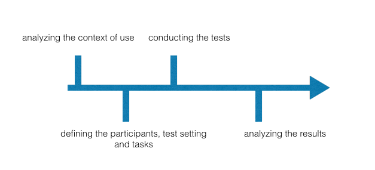
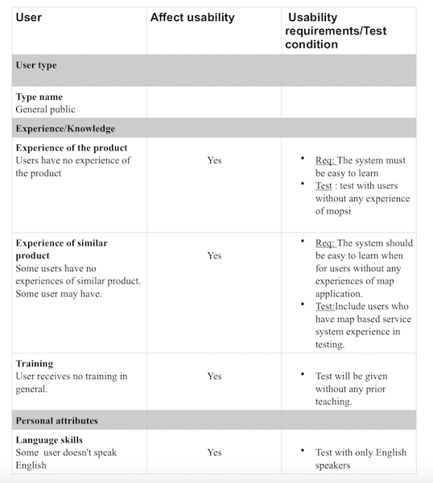
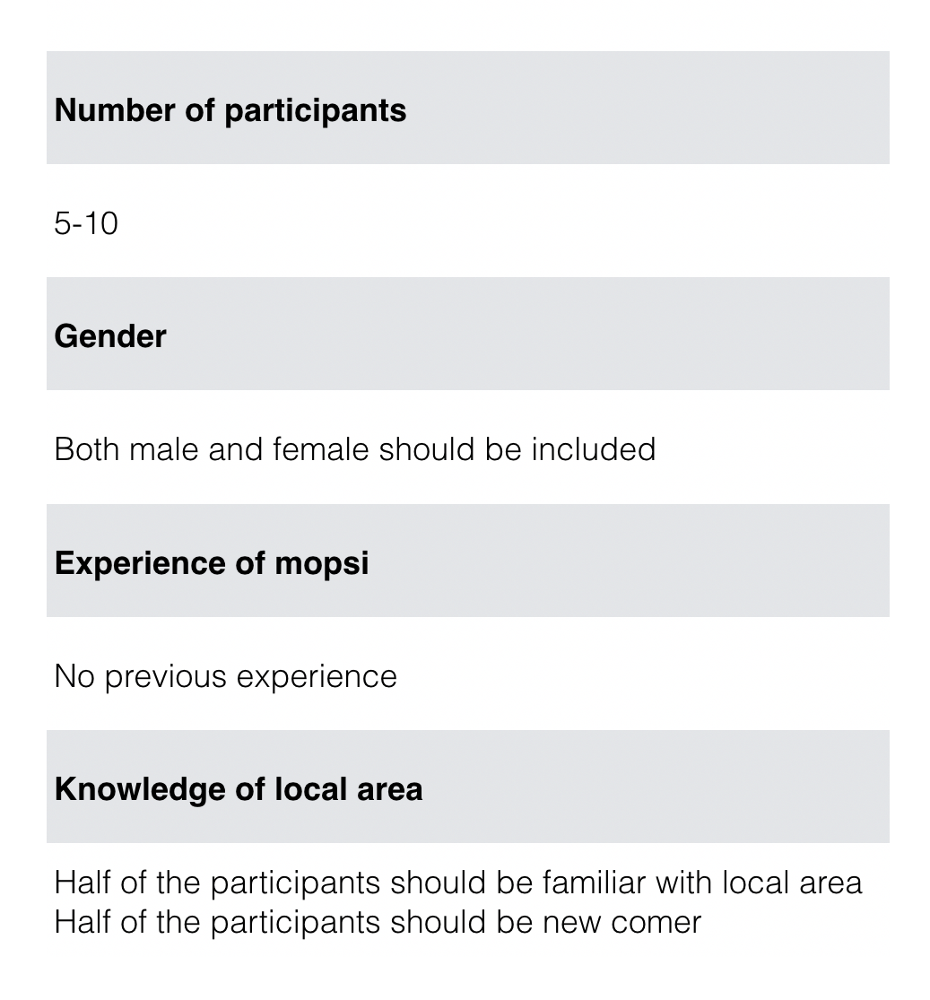
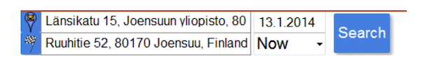
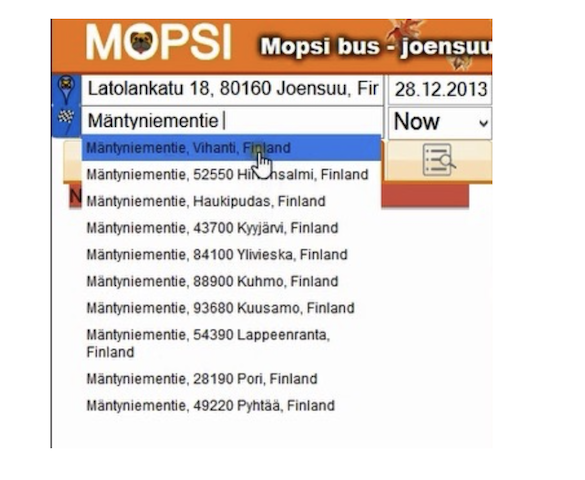

"Usability is the effectiveness, efficiency and satisfaction with which specified users achieve specified goals in particular environments. "
Overview
The ISO definiation of usability was taken as the research paradigm.
The testing was conducted in following stages:
Analysis of context of use
I analyzed the charactiristics of users and environments and listed tha tasks users would need to accomplish.
Below is a table of analysis of user characteristics and how they would affact the usability of the system and how the test condition would be set in the tests.
{kind=link}
Defining the participants, test setting and tasks
After analysis of context of use, I defined the testing plan. The plan includes variables of characteristics of participants and test environment and tasks to be accomplished by participants.
Below is a table of variables of chaacetristics to be controlled in the tests.
Conducting the tests
6 users participated the tests.
- 3 international student and 3 locals
- none of them has experience in using the system before
Tests were conduct at home of moderator(Me) or home of users.
Users were allowed to explore the system before testing.
No training was given to users.
Findings
Some interface problems have been found and here are two of them.
Unclear icons
There are two search boxes for departure places and arrival place, represented by two icons. This was not clear enough for participants. Some participants tried to search for destination address in search box for departure address.
Inconsistency in giving recomendation of address
Sometimes the system gave recomendation of the addresses according to what the user had typed. Sometimes it didn't. This made some participates build wrong conceptual model on the system. Some of them thought if the address they want to search didn't show up in the list, it wouldn't be accepted by the system.
{kind=link}
{kind=link}